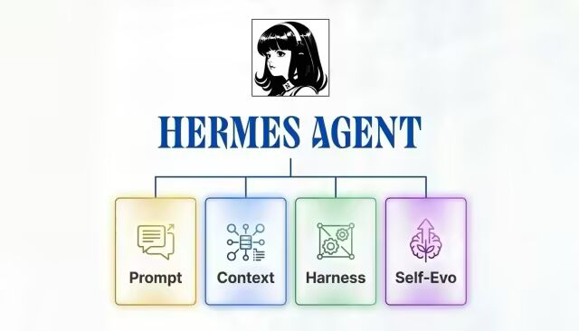
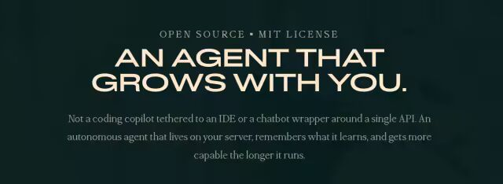
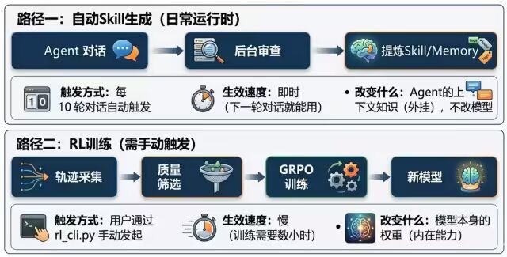

Hermes Agent 自进化双路径：动态 Skill 生成 + RL 训练闭环，实现"吃一堑长一智
阿里妹导读
本文是「项目深度解析」系列的第3篇，也欢迎阅读：《深度解析OpenClaw》《深度解析Claude Code》。（文章内容基于作者个人技术实践与独立思考，旨在分享经验，仅代表个人观点。）
背景
不知道大家有没有同感，自从进入2026年，AI这个行业仿佛被开了N倍速，近几个月的技术迭代速度感觉都超过了过去好几年，AI领域真正开始进入“技术爆炸”阶段。 就比如最近，你是否在雪山救过一只狐狸🦊？（额，不对，皮一下，哈哈哈~~~） 你是否刷到了一款名为Hermes Agent的项目？ 这不是包包， 是一款由Nous Research（一家美国的开源人工智能研究机构）在2月底推出的开源Agent项目[1]。
自从发布以来，Hermes Agent 在 GitHub 上已经狂揽4万颗Star了[2]，而且版本更新的速度超过了许多商业化的Agent产品。那他为什么突然火了起来呢？我们先看下它官网的介绍，翻译成中文就是：
“Hermes Agent 并不是一个绑定在集成开发环境（IDE）中的编程Copilot，也不是仅封装了单一API的聊天机器人外壳，它是一个部署在服务器上的自主智能体，能够记住所学内容，并且运行时间越长，能力就越强”。
由此可以看出，Hermes 主打的核心亮点非常明确：“持久运行”（Persistent）和“自进化”（Self-Evolving）。

在功能方面，它支持40+款内置工具，兼容多种主流大语言模型，并内置了Cron调度器来执行复杂的定时任务；在交互方面，它与 OpenClaw （也就是“龙虾”🦞）很类似，支持通过各种第三方消息平台进行访问，很方便就可以拓宽使用场景。
它的突然爆火，已经热度高到有超越 OpenClaw 之势，许多人都开始放弃“养虾”，转而使用Hermes， 而且 Hermes 官方就支持从 OpenClaw 无缝迁移。其实，OpenClaw 也就才火了两个多月，没想到这么快就出现了“后来者居上”，这波我确实属实没想到迭代速度会有这么快，所以我文章一开头说，AI领域的发展速度远比我们想象的快得多，真的已经进入了“技术爆炸”阶段，这个领域竞争的激烈程度可想而知。这也导致出现了很多人开玩笑说的“还没学明白，就不用学了”的情况。
这种高强度的技术演进，也导致我这个原本的“月更作者”，硬生生快被逼成了“周更作者”，哈哈哈（当然，我也是得益于各类AI工具带来的提效，以前是纯古法写作）。虽然节奏变快了，但能见证并记录这些技术的快速变迁，也是这个时代一种难得的体验吧。
而且，我也没想到，在刚写完深度解析 OpenClaw、Claude Code 之后，这个类型的文章居然可以做成一个系列。那么，今天就让我们继续这个系列的第三篇吧 ——“深度解析 Hermes Agent 源码”。还是跟之前一样，我的重点并不会放在项目具体的前后端工程设计上，而是会延续之前的分析框架，从Prompt Engineering、Context Engineering、Harness Engineering这三个核心维度出发，来探讨“如何做好一个 Agent”。但与以往不同的是，今天我将增加一个新的视角，也是 Hermes Agent 最大的亮点：“如何实现自进化（Self-Evolving）”。因为，OpenClaw 和 Claude Code 也基本具备持久运行的能力，所以我们会将重点放在剖析 Hermes 是如何通过机制设计，让 Agent 具备长期记忆、持续学习和自主优化的能力。

当仔细研究这个项目，我们就会发现它依然是站在了巨人的肩膀之上。它的 Prompt 结构、Context 管理以及 Harness 设计来看，与 OpenClaw、Claude Code 有非常多的相似之处。对于这些共性部分，我就不深入展开了，大家可以参考我之前的两篇文章《深度解析OpenClaw在Prompt/Context/Harness三个维度中的设计哲学与实践》和《深度解析Claude Code在Prompt/Context/Harness的设计与实践》，我在后续文章中也会明确指出哪些是与已有方案类似的，就不在赘述了。我们将把主要的注意力集中在 Hermes Agent 与 OpenClaw、Claude Code不同的地方，看看它是如何在继承优秀设计的基础上，通过新的设计来实现“自进化”这一核心能力的，希望能为正在构建长效、自主 Agent 的朋友们带来一些新的启发。
Self-Evolving：“内外”双路径驱动的“自进化”
Hermes Agent之所以可以做到“自进化”，最主要就是依赖于两条路径：一是日常的自动Skill生成（Skill Generation），可以快速、轻量、即时生效；二是可以手动触发的RL训练（Reinforcement Learning），从更深度、根本上改变模型本身的能力。这两种路径共同构成了Hermes Agent的“内外”双轮驱动的“自进化闭环”。

动态Skill生成：从“一次性执行”到“经验沉淀”
首先，我们先介绍下第一条路径，也是 Hermes 与OpenClaw、Claude Code 不同的地方。
之前我在分析OpenClaw的时候，可以发现其上下文管理策略主要服务于“当前会话”的稳定性：它通过压缩上下文来防止 Context Window 爆炸，并通过记录 Memory 来记住关键事实或日常事件，来避免后续对话中的遗忘。然而，这种设计下，只解决了 Context 的容量问题，Agent 的执行过程依然存在一个明显的短板——它是“无状态”的。
当 OpenClaw 完成一个任务后，无论过程中走了多少弯路、犯了多少错误，亦或是经过了多少次自我纠正甚至人工引导才最终成功，这些宝贵的“试错经验”都很难被沉淀下来。下一次遇到类似任务时，它依然会从头开始，大概率“重蹈覆辙”，除非你主动要求它把这些错误经验保存下来，通过Memory或者Skill之类的方式去记录，否则它是不会自动“长记性”的。即使你让它通过Memory去记录，在这些md文件中一般也只记录一些简要的重点事项和用户习惯，不会记录太多执行细节。换句话说，OpenClaw 是不能自主从历史交互中学习的，它的智能上限被锁定在了初始的基座模型和静态的提示词以及静态Skill上。
那么，Hermes 是如何解决这个“重复踩坑”的问题的呢？
其实，也没多复杂，引入了一种动态的Skill沉淀机制。在每次完成复杂任务，尤其是那些经历了曲折路径或人工干预的任务后，Hermes不会简单地丢弃对话历史，而是会启动一个“复盘”流程。它会回过头来审视整个执行轨迹，提取其中的关键步骤，特别是那些“踩过的坑”、有效的纠错手段以及人工验证过的最佳实践。随后，系统将这套经验总结、抽象为一个结构化的Skill技能文件包。这就带来了一个根本性的转变：Skill从“静态调用”变成了“动态生成”。
虽然 OpenClaw、Claude Code 也支持 Skill 机制，但其 Skill 本质上还是静态的，通常是由用户或者开发者预先编写好，或者从官方/第三方Skill库中下载安装。这更像是一种传统的“APP 软件”模式：你需要先发布、安装，才能运行。一旦安装完成，除非人为更新，否则它不会变化。当然，会有人说，你可以人为要求 OpenClaw 或者 Claude Code 在任务结束之后帮你生成 Skill，是的，但这还不是“自进化”。
而 Hermes 将 Skill 变成了一种动态的、可进化的资产。它主要实现了：
- 自动生成：Hermes 能够基于自身的Agent运行轨迹（Trajectory），自动生成新的Skill来沉淀。
- 持续优化：如果在后续执行新任务时发现了更优的路径或新的边界情况、“踩坑”情况，Hermes 会继续更新完善这个已有的Skill。
- 持续积累：随着对话越来越多，相应的 Skill 也会越用越多，Agent 的能力库越来越丰富
这样，当 Hermes 下次遇到类似问题的时候，Agent也就不再是从零开始探索，而是直接读取并复用已有的沉淀好的Skill。通过这种方式，Hermes 实现了真正的“吃一堑，长一智”。其他 Agent 可能会无休止地重复相同的错误，而 Hermes 则将每一次执行都转化为成长的“养分”，通过不断沉淀和优化 Skill，建立起属于自己的、动态增长的知识库。这也是 Hermes 在长期运行中，效果能够持续“自进化”的秘诀之一。
触发机制
在根目录下的run_agent.py中有一个“技能催促”的计数器，_iters_since_skill记录了距离上次使用skill_manage工具过了多少轮；_skill_nudge_interval = 10则表示当 Agent 连续工作了 10 轮对话都没有创建/修改技能时，系统会“提醒”Agent“你是不是该把刚才学到的经验整理成技能了？”
后台审查Agent
每当主 Agent 完成对用户的回复后，对于用户而言，交互似乎就此结束。但在后台，Hermes 通过_spawn_background_review会在后台异步启动一个审查 Agent。这是一个异步处理机制，系统会立即 Fork 出一个新的轻量级 Agent 实例，专门负责对刚刚结束的对话进行深度复盘。这个后台 Agent 不会干扰前台的用户体验，而是从三个维度对此次交互进行全方位审查的Prompt：
- 记忆审查（_MEMORY_REVIEW_PROMPT）：这段对话有什么值得记住的经验？判断这段对话中是否蕴含值得长期保留的关键经验或事实，提炼初长期记忆，存入 Agent 的记忆库
- 技能审查（_SKILL_REVIEW_PROMPT）：这个任务模式是否值得变成Skill？分析当前的任务解决路径是否具有通用性，是否值得被抽象并固化为一个可复用的Skill
- 综合审查（_COMBINED_REVIEW_PROMPT）：有什么可以改进的？反思整个执行过程中是否存在优化空间或潜在的错误模式。
这是一种“前台即时响应、后台异步进化”的设计，用户看到的是 Agent 秒回，背后审查 Agent 慢慢整理经验。这种设计就让Hermes 确保了每一次交互不仅解决了当下问题，更为未来的智能化积累了数据沉淀。
RL训练闭环：“权重内化”的终极“自进化”
虽然通过动态生成 Skill 沉淀实现的“外挂式”进化在时效性和可解释性上表现优异 —— 毕竟明文记录的 Markdown 文件允许人工进来进行干预和纠偏，确保 Agent 不会在错误的道路上越走越远 —— 但我们必须承认一个事实：这并不是真正意义上的“自进化”或者“自我学习”。因为无论 Agent 积累了多少 Skill，其底层的“模型权重”始终没变。它只是在不断地检索外部知识库，而非将经验内化为自身的直觉与能力。对于追求极致性能、或在特定垂直领域需要突破通用模型瓶颈的场景来说，这种基于Context Engineering的优化方式依然存在着天花板。
因此，Hermes 引入了第二条更深层、更直接的进化路径：基于强化学习（RL）的模型训练闭环。如果说 Skill 生成是“记笔记”，那么 RL 训练就是“练内功”，它就是在通过改变模型权重，实现真正的能力“自进化”。这个部分比较像Andrej Karpathy之前时间提出的开源项目AutoResearch[3]，可以在单GPU上做自动化的RL模型训练，但Hermes相比而言做的更加完善和成熟。
Hermes 在项目的 README.md文件中有个说法是"Research-Ready"（研究就绪）的自动化训练框架。为什么不直接叫“Model Fine-Tuning”或者“Model Training”呢？这就恰恰反映出了 Hermes 的一个细节了，它是构建一套从数据合成、质量筛选、RL训练环境构建、小规模实验、正式训练及自动化评估的一个完整闭环，所以如果只强调是“模型训练”，反而把格局变小了。
整个RL训练过程分阶段来看，主要是下面几个部分：
- 任务定义：用户可以指定具体的训练目标，例如“提升数学推理能力”或“优化特定业务问题”的成功率。系统会根据目标去选择可用的训练数据、Benchmark或者让用户提供相应数据集。
- 轨迹捕获 & 批量数据合成：Hermes 内置了批量处理模块batch_runner.py，能够自动去合成Agent的运行轨迹（Trajectory），并且筛选过滤出高质量的数据集。然后将这些轨迹数据清洗并转换为标准的ShareGPT格式，为后续的模型训练提供高质量的“原料”。在这个过程中，Hermes 通常会利用最强的旗舰模型（如 Claude Opus 4.6）作为“教师模型”来生成初始的高质量示范数据，确立一个高起点的Baseline。随后，系统会自动创建隔离的RL训练环境，并配置相应的超参数。
- 渐进式训练与自动评估：为了降低试错成本，Hermes 采用“小步快跑”策略：先使用小规模数据集进行实验性训练，验证可行性后，再启动正式的大规模训练。训练结束后，系统会自动评估（Evaluate），分析各项指标是否有显著提升。如果效果未达预期，反馈信号将指导下一轮的参数调整或数据优化；如果效果显著，则将该版本模型固化。
- 领域内的局部最优解：这套机制的价值在于，它能让通用大模型在特定领域（Domain-Specific）实现超越基座模型的表现。通过强化学习中的奖励机制（Reward Model），模型不再仅仅依赖通用的概率预测，而是针对特定场景下的正确行为获得正向反馈，从而逐渐“学会”该领域的专有逻辑，最终达到该场景下的局部最优解。
接下来，我们将详细拆解这一模型训练闭环过程的具体技术实现。
Agent轨迹组织
Agent轨迹（Trajectory）就是指的 Agent 完成一次任务的完整对话记录——包括系统提示词、用户请求、Agent 的思考和行动、工具调用和结果。在agent/trajectory.py中，可以将Agent的轨迹数据转换为ShareGPT格式的数据，整个“自进化”Pipline使用这种统一的格式，示例如下：
Agent轨迹数据格式
- - - - - - - -
[
{"from": "system", "value": "你是 Hermes Agent..."},
{"from": "human", "value": "帮我部署这个应用"},
{"from": "gpt", "value": "好的，我先检查环境..."},
{"from": "tool", "value": "<tool_call>execute_code(...)</tool_call>"},
{"from": "tool", "value": "<tool_response>成功</tool_response>"},
{"from": "gpt", "value": "部署完成！"}
]你可能会想问：为什么要用ShareGPT格式？而且现在LLM那么多，也不一定是训练GPT模型，为什么要用"gpt"这个标签，而不是改成"assistant"或"model"？那如果我要训练Qwen、Kimi、LLama这些模型，使用"gpt"标签会不会对模型理解有影响？
这里稍微解释下原因，其实也很简单：使用ShareGPT是因为整个生态都在用这个格式。比如LLaMA-Factory、FastChat、OpenChat这些工具/框架都支持这个格式，比较统一。而"gpt"标签是历史遗留的行业约定，因为 OpenAI 最早发布的 GPT 模型，导致都用了这个字段，其实没关系，就像 "HTTP" 不代表你只能传输超文本一样，它就只是一个标签，所有主流训练框架都认这个标签就可以。如果你单方面把"gpt"改成别的，那它生成的训练数据就没法直接导入这些工具了，反而不兼容了。
那训练时候，非GPT模型会不会困惑？不会。因为训练框架会转换，这些训练框架在实际训练时，会把"from": "gpt"映射到具体模型的chat template中正确的assistant token。
在数据预处理层面，Hermes 依赖三个核心函数来确保训练数据的质量与规范性：save_trajectory负责将 Agent 的运行轨迹以追加模式持久化存储至 JSONL 文件中，实现数据的增量积累；convert_scratchpad_to_think则专注于格式标准化，将内部使用的<REASONING_SCRATCHPAD>标签转换为模型训练通用的<think>格式，以适配主流大模型的思维链（CoT）训练要求；而has_incomplete_scratchpad扮演着“质检员”的角色，通过检测推理标签的完整性来识别并过滤因截断导致的数据残缺，从而从源头上保障进入训练环节的数据都是结构完整、逻辑连贯的高质量样本。
最后，会输出trajectory_samples.jsonl里面是成功完成的轨迹，failed_trajectories.jsonl里面是失败的轨迹。每条 JSONL 记录的结构如下：
轨迹JSONL数据格式
- - - - - -
{
"conversations": [...], // ShareGPT格式的对话
"timestamp": "2025-04-11T10:30:00",
"model": "anthropic/claude-4.6-opus",
"completed": true
}批量数据生成
通用数据生成
负责批量生成数据的是batch_runner.py，这是Hermes“自进化”的主力数据工厂，它能并行处理大量提示词，为每个提示词运行一次完整的 Agent 对话，收集轨迹。这个过程的主要流程如下：
- 准备提示词：需要人工准备一批 JSONL 格式的提示词文件（如{"prompt": "请帮我搜索AI领域的最新进展"}），或从某些 Benchmark 数据集中去采集（比如GSM8K、HumanEval等数据集）
- 并行处理：batch_runner.py用线程池并行处理每条提示词，每条提示词创建一个独立的 Agent 实例
- Teacher 模型生成：默认使用anthropic/claude-opus-4.6作为 Teacher 模型，执行完整的 Agent 对话（包含工具调用、推理、搜索等）
- 录制轨迹：将 Teacher 模型的完整对话过程转化为 ShareGPT 格式的训练数据
- 工具集随机采样：这是一个比较巧妙的设计，不是每次都用同样的工具配置，而是随机采样不同的工具组合。这样训练数据中就包含了各种工具搭配的场景，模型学会的不是死记硬背一种配置，而是灵活运用各种工具。
- 零推理过滤的质量控制：通过_extract_reasoning_stats来统计<REASONING_SCRATCHPAD> 和reasoning字段的出现次数，如果两者都为零的话，那这条样本被丢弃。为什么呢？ 因为，如果 Agent 在整个对话中完全没有进行显式推理，说明它可能只是在机械地执行操作，没有“思考过程”。这样的样本对训练是没有价值。
除此之外，还有一种数据合成的方法是Hindsight-Guided On-Policy Distillation (OPD)，这是一种最精细的 Teacher-Student 机制，基于 Princeton 大学 2026 年的 OpenClaw-RL 论文《OpenClaw-RL: Train Any Agent Simply by Talking》[4]，详情可以看下environments/agentic_opd_env.py里面的实现。
SWE任务数据生成
除了刚刚讲的batch_runner.py，还有一个mini_swe_runner.py，这是一个垂直领域的的数据生成器，专门用来处理SWE Benchmark（软件工程基准测试）任务的场景。这与批量数据生成的区别：
| 文件 | batch_runner.py | mini_swe_runner.py |
|---|---|---|
| 用途 | 通用数据的批量生成 | SWE Benchmark任务 |
| 任务类型 | 任意提示词 | 代码修复/实现 |
| 完成信号 | 对话自然结束 | echo "MINI_SWE_AGENT_FINAL_OUTPUT" |
Agent轨迹压缩
但是在生成出来数据之后，会发现原始轨迹可能有几十万个Token（一次复杂对话久可能调用十几次工具），直接用于RL训练是不太现实的。所以可以使用trajectory_compressor.py里的轨迹压缩器将它们精炼到可控的大小。下面是一个核心配置的示例：
轨迹压缩配置
- - - - - - - -
@dataclass
class CompressionConfig:
tokenizer_name = "moonshotai/kimi-k2.5" # 精确 Token 计数器
target_max_tokens = 15250 # 压缩后的目标上限
summary_target_tokens = 750 # 摘要的 Token 预算
protect_last_n_turns = 4 # 保护最后 4 轮对话
summarization_model = "google/gemini-3-flash" # 轻量级的摘要模型
max_concurrent_requests = 50 # 并发摘要请求数那么，压缩算法的执行过程是怎样的呢？整个压缩流程分为几个步骤：
首先，系统使用 HuggingFace 的AutoTokenizer对原始轨迹进行精确的 Token 计数，避免粗略估算带来的误差。如果当前轨迹长度已低于目标上限（默认是15250个Token），则直接跳过压缩环节，保持原样返回，以保留最完整的信息密度。
如果需要压缩，系统会进入核心的区域识别阶段，将对话划分为三个部分：
1.头部保护区（Head Protection）：这是任务的“锚点”，包含第一条系统指令（System Prompt）、第一条人类消息（原始任务定义）、第一条 GPT 回复（初始思路）以及第一次工具交互。这部分内容定义了任务的初衷和起始状态，绝不被压缩。
2.尾部保护区（Tail Protection）：这是任务的“结果”，包含最后 4 轮对话。它们承载了最终的结论、输出结果和验证信息，是评估任务完成度的关键，同样绝不被压缩。
3.中间压缩区（Compression Zone）：介于头尾之间的大量中间步骤、反复的工具调用和纠错过程。这部分虽然记录了探索路径，但往往存在大量冗余，是压缩的主要对象。
在确定压缩区后，系统会计算需要节省的 Token 目标值（tokens_to_save），并从中间压缩区的起始位置开始，逐轮累积待压缩的内容，直到满足节省目标。随后， Hermes 将这些被选中的“冗余”片段发送给一个轻量级、速度快的模型（比如 Gemini Flash），指令其生成一段以[CONTEXT SUMMARY]:开头的精炼摘要。这段摘要旨在用极简的语言概括中间过程的逻辑脉络，而非罗列细节。
最后，系统将头部保护区 + [生成的摘要] + 尾部保护区重新拼接，构建出一条结构完整、逻辑连贯但体积大幅缩减的新轨迹。为什么保护头和尾？因为头部包含任务定义，没有它，模型不知道在做什么。尾部通常包含最终答案，没有它，训练信号不完整。而中间则是大量试错和探索，就可以用一句话概括摘要。通过这种方式，Hermes 既确保了模型在训练或推理时能够捕捉到任务的头（起因）和尾（结果），又通过摘要保留了中间探索的大致方向，同时有效控制了上下文长度，实现了数据质量与计算效率的平衡。
RL强化学习训练
rl_cli.py是Hermes用来做RL强化学习训练的核心文件，是连接数据和训练过程的桥梁，它是一个专用的命令行工具，来引导 Agent 完成整个 RL 训练流程。其关键配置如下：
RL训练配置
- - -
RL_MAX_ITERATIONS = 200 # 最大迭代次数（训练流程较长）
DEFAULT_MODEL = "anthropic/claude-opus-4.6" # 使用强模型指导训练
RL_TOOLSETS = ["terminal", "web", "rl"] # 可用的工具集为了确保强化学习（RL）训练的可控性与可复现性，Hermes 将复杂的模型调优过程抽象为一套标准化的训练过程。这套过程通过严格的步骤约束，避免了因配置错误导致的资源浪费。
最开始是发现与洞察（Discover & Inspect）阶段。首先，用户通过rl_list_environments()浏览系统中可用的训练环境模板。选定目标后，进入深度 inspect 环节，仔细研读环境文件中的核心逻辑，包括load_dataset()的数据加载机制、score_answer()的评分函数定义、get_next_item()的数据迭代方式，以及system_prompt和config_init()等关键配置。与此同时，用户还可以通过终端直接探索 HuggingFace 数据集，确保对训练数据的分布和质量有直观认知。
然后，是构建与配置（Create & Configure）阶段。基于对环境和数据的理解，用户复制并修改合适的环境模板，随后利用rl_select_environment和rl_edit_config工具精确定制训练参数。这一步骤至关重要，它决定了模型将在何种规则下进行自我进化。
紧接着是验证测试与正式训练（Test & Train）阶段。在正式投入算力之前，Hermes 强制要求执行rl_test_inference，以验证环境配置的正确性和推理链路的通畅性，这是防止训练过程存在错误的关键防线。确认无误后，调用rl_start_training启动正式的训练任务，并通过rl_check_status监控进度。需要注意的是，由于训练过程的异步特性，状态检查建议至少间隔 30 分钟，以避免频繁请求造成的系统负载。
最后是评估（Evaluate）阶段。训练结束后，系统通过rl_get_results获取最终模型产物，并结合 WandB 指标分析。通过可视化损失曲线、奖励得分等关键指标，用户可以直观判断模型是否实现了预期提升，从而决定是接受该版本模型，还是回到配置阶段进行下一轮迭代优化。这一闭环的过程，使得 Hermes 的 RL 训练不再是黑盒操作，而是一个透明、可控且持续进化的工程化过程。
那么，有几个细节问题可以展开讨论一下。
GRPO算法思路
Hermes 项目使用GRPO（Group Relative Policy Optimization）强化学习算法，这个是由DeepSeek R1的论文里面提出来的。在Hermes里有一个Skill就是使用GRPO来做RL训练模型的，具体路径在/skills/mlops/training/grpo-rl-training/SKILL.md。
GRPO算法的核心思路也比较直观：对于同一个问题，先让模型生成 8~16 个不同的回答，然后用奖励函数给每个回答打分，之后让模型学习“多产出高分回答，少产出低分回答”。
GRPO算法的一个关键优势是不需要单独训练一个奖励模型（Reward Model）了，而是直接用规则化的奖励函数即可。这就简单得多了，以前我们为了训练一个 Reward Model 可真的是煞费苦心，却也总是很难训练好。
奖励函数的设计
Hermes项目设计了多维度的组合奖励，不是只看一个指标。以下是从Hermes的源码的basic_grpo_training.py中找到的核心奖励维度设计：
| 维度 | 权重 | 衡量什么 |
|---|---|---|
| 正确性 | 2.0（最高） | 最终答案是否正确 |
| 格式规范 | 0.5 | 是否遵循 <reasoning>...<answer> 结构 |
| 渐进格式 | 0~0.5 | 部分符合格式也给分（比如只写了开标签） |
那么，同时我也从/skills/mlops/training/grpo-rl-training/SKILL.md中找到了奖励函数设计的黄金法则：
1.组合 3~5 个奖励函数，每个函数管一个方面
2.权重要合理：正确性最高（2.0），格式次之（0.5~1.0）
3.给部分分：比如写了 但没闭合，也给 0.125 分
4.先单独测试每个奖励函数，再合起来用
另外，在强化学习的环境中，奖励函数也不是只做一些规则类的字符串匹配。通过ToolContext机制，奖励函数也可以执行终端命令：比如编译代码验证正确性；读取文件：检查 Agent 是否真的修改了文件；访问网络：验证搜索结果是否真实；使用浏览器：检查网页内容等等。这就意味着奖励函数可以做“真实验证”，而不仅仅是文本匹配。比如在训练 Agent 写代码时，奖励函数可以直接编译运行代码来判断对错。
思考：为什么不直接从用户数据中学习？
讲到这里，你可能会发现一个问题：RL的训练数据似乎不是来自用户数据，而是通过Teacher Model做的数据合成或者是从Benchmark中进行了构造，那为什么不直接读取用户的对话轨迹数据呢？这不是天然的Agent轨迹数据集吗？尤其是最近这些天，有许多营销号为了夸大其词，说 Hermes 可以自动根据存储的用户对话数据进行模型训练，从而实现“自进化”等等，误导了很多人。
做RL训练的真正目的不是“从用户那学东西”，而主要是先做知识蒸馏——把 Claude Opus 这种大模型的 Agent 能力"压缩"到如Qwen 3~4B 这种小模型里。
那么，RL训练的实际意义是什么？有几个方面，一是降本。通过Claude Opus的API调用要花不少钱，而Qwen小模型部署在本地跑不要钱；再就是，大模型响应太慢，小模型推理快；然后，有些场景下，收到安全合规的限制，不允许使用API调用，因为数据会走到外网，但本地模型数据不出机器，符合安全合规的要求。
再就是，通过RL的奖励机制，使得开源模型在这些具体领域的 Agent 能力上有机会接近甚至超过更大参数闭源模型的水平，能够做到在某些场景的极致效果，然后再套上第一层的自动生成Skill的“自进化”系统，就能实现在具体场景更好的工作了。
其实，如果真要做到“用着用着就变聪明了”这种体验，理论上的确是需要把用户的高质量对话轨迹收集回来做训练。但这个项目明确不建议这么做，原因我理解应该是主要是两方面：
- 隐私问题：用户对话可能包含敏感信息，用户不一定想要将其训进去
- 质量问题：这个也是最关键的一个，用户对话质量参差不齐，直接拿来训练可能让模型变差，按照之前我们训练模型的实际经验，直接用历史对话数据训练模型，大概率会把模型“训废”
如果你的需求就是要基于之前的历史对话轨迹来提升模型的能力，那么，其实也是可以做到的，就是在前面第二部批量数据构造的时候，将历史对话数据作为一个数据源由人工导入进去，在Teacher Model参考下做数据合成，同时也在质量上把把关，才能最终给到RL模型去使用。
那么，到这里呢，Hermes这个项目的“自进化”部分就讲的差不多了。主要就是通过自动化动态生成 Skill 机制解决了“即时纠错”和“沉淀复用”的问题；以及RL训练闭环从本质上实现了“智能提升”的问题。两者结合，才构成了 Hermes 完整的“自进化”体系。
接下来，进入我们的“传统艺能”：对Hermes这个项目，从Prompt Engineering、Context Engineering、Harness Engineering三个维度展开深度解析。
Prompt Engineering：模型异构与无缝迁移的“兼容主义”
在 Prompt Engineering （提示词工程）维度，Hermes 延续了业界主流的动态拼装范式，它的基础结构与 OpenClaw 或 Claude Code 高度相似：首先定义 Agent 的身份角色，随后加载“灵魂”文件SOUL.md，最后注入工具的调用指南和元数据（名称、描述等）。然而，Hermes 的精妙之处不在于结构的复刻，而在于其对模型异构性的深刻理解和生态兼容性的极致追求。
工具使用强制指导
首先，针对不同的大模型在工具使用上的“性格差异”，Hermes 引入了一种强制性的动态工具引导机制。不同基座大模型对工具调用的主动性截然不同。比如：Claude训练时就强调工具使用，一般不需要额外提醒；GPT/Codex容易“只说不做”，需要明确指令：“你必须用工具执行，不要只描述你会做什么”；Gemini/Gemma则需要提醒使用绝对路径、先读后改、并行调用工具。为此，Hermes 会根据当前选用的具体模型，动态注入针对性的指令补丁，对有惰性的模型强调“执行而非描述”，对粗糙模型强调“规范与顺序”。这种“因材施教”的 Prompt 策略，显著提升了不同模型在实际任务中的稳定性和准确率。
下面的配置项的参数和配置逻辑：
工具指导Prompt配置
- - - - -
配置项 agent.tool_use_enforcement 可以是：
├── "auto"（默认）→ 根据模型名自动判断
├── true → 强制注入
├── false → 不注入
└── ["gpt", "gemini"] → 只对列表中的模型注入- 对GPT 专属指导：必须用工具的场景：写文件、执行代码、终端命令、网页搜索；禁止幻觉：不能编造文件路径、API 地址；执行后验证：修改文件后要确认、测试代码要验证输出
- 对Gemini/Gemma的专属指导：始终使用绝对路径（不用相对路径）；编辑前先读取文件确认内容；多个独立操作要并行调用工具
说白了就是给不同的大模型单独设计了一些特定的Prompt，这个其实也算Harness设计的范畴了，不过因为主要是加了一些提示词，就先放在这里讲吧。
兼容各AI产品生态
其次，也是 Hermes 最具竞争力的设计亮点，在于其极低的用户迁移成本。Hermes 在 System Prompt 的拼装逻辑中，刻意保留了对主流 Agent框架配置文件的全面兼容：
1.兼容 OpenClaw 生态：它能够直接读取并解析 OpenClaw 的AGENT.md、SOUL.md、USER.md等核心配置文件。这意味着用户可以零成本地将现有的 OpenClaw 工作流无缝迁移至 Hermes 平台，实现从“旧架构”到“新进化体”的平滑升级。
2.兼容 AI Coding 主流规范：对于使用 Cursor、Claude Code 等编码助手的开发者，Hermes 同样支持读取CLAUDE.md或.cursorrules、.cursor/rules/*.mdc等描述文件。这使得 Hermes 能够迅速融入现有的 AI 编程工作流，理解项目上下文规则，无需重新编写大量的项目指引。
3.兼容多平台 IM 协议：针对 WhatsApp、Slack 等不同即时通讯平台的特性，Hermes 内置了相应的适配提示词，确保 Agent 在不同交互界面下都能保持得体的语气和规范的行为。
可以看到，Hermes 的 Prompt Engineering 其实是一个连接了不同模型与不同平台的枢纽。它通过动态适配解决模型能力的短板，通过广泛兼容降低用户的切换门槛，真正实现了“拿来即用，用即高效”的工程化目标。
除此之外，Hermes 在 Prompt Engineering 方面的其他特性，比如System Prompt的动态拼装机制，跟OpenClaw, 或者Claude Code是非常相似的，也是先定义了Agent的身份，再去加载了一些人设、灵魂，然后是工具调用，包括工具的指导、时间戳、网关Gateway信息、Memory记忆、模型信息等等，于是在这里我就不赘述了。有兴趣的朋友可以看看我之前深度解析OpenClaw或者Claude Code的文章，关于Prompt Engineering的部分。
Context Engineering：比例阈值压缩与记忆持久化
在 Context Engineering（上下文工程）层面，Hermes 的设计哲学与 OpenClaw 和 Claude Code 也是一脉相承，核心目标也同样是为了应对随着对话轮次增加、工具调用累积而导致的 Context Window 溢出问题。通过上下文的智能压缩、Memory 的记忆增强以及关键信息的注入与持久化，Hermes 确保了 Agent 在长程任务中的稳定性与连贯性。在持久化存储方面，Hermes 选择了与 OpenClaw 相同的数据库SQLite。这种轻量级的文本数据库方案，能够高效地存储长期的 Memory 数据和历史对话记录，为 Agent 提供稳定的“长期记忆”支持，确保持久化层的成熟度与可用性。这些相似度很高的地方，我也不一一展开了，这里主要讲两方面的差异。
压缩：上下文的动态阈值压缩
第一个差异，是在实时上下文压缩机制上，Hermes 展现出了与 OpenClaw 不太一样的触发逻辑，这也是两者在工程实现上的一个显著差异点：
- OpenClaw 的绝对阈值触发：OpenClaw 通常设定一个固定的 Token 数量边界，例如当上下文总Token是 20K，边界预留2k Tokens 时，那么等Token数达到 18K，就会触发压缩机制。这种方式简单直接，但在不同模型、不同窗口大小的场景下，可能需要频繁调整配置。
- Hermes 的相对阈值触发：Hermes 引入了一种更为动态和自适应的比例阈值机制，具体可以参考文件agent/context_compressor.py。它不关注具体的 Token 绝对数量，而是监控当前上下文占用总窗口容量的比例。例如，当上下文长度达到模型总窗口阈值的50%时，系统便会自动触发压缩流程。举个例子：
上下文压缩逻辑
- - - - -
context_length = 200,000 tokens（模型的最大窗口）
threshold_percent = 0.50（50%时触发压缩）
threshold_tokens = 200,000 × 0.50 = 100,000 tokens
当前对话 Token 数 ≥ 100,000 → 触发压缩！通俗点来理解，就像你的电脑硬盘用到50%时会自动清理垃圾文件。这种基于比例的设计具有更强的泛化能力。无论底层切换的是拥有 200K 窗口的模型，还是只有 32K 窗口的轻量模型，Hermes 都能根据剩余空间的“健康度”灵活决定何时进行清理，从而更精细地平衡“信息保留”与“窗口预留”之间的关系。
然后就是裁剪，具体执行裁剪时，Hermes 采用了与 OpenClaw 类似的“头尾保留、中间摘要”策略：
1.头部保护：保留系统指令、初始任务定义等关键引导信息。
2.尾部保护：保留最近的几轮对话，确保短期记忆的连贯性。
3.中间压缩：对中间冗长的工具调用过程、推理步骤进行裁剪，并利用 LLM生成精炼的摘要（Summary）来替代原始细节。
4.通过压缩+裁剪机制，Hermes 既避免了上下文爆炸导致的运行错误，又最大程度地保留了任务执行的关键脉络，实现了上下文管理的高效性与智能化。
还记得在Self-Evolving的RL训练部分，我们还提到了轨迹压缩，这两种压缩也可以对比一下：
| 特性 | 上下文实时压缩 (Context Compressor) | 离线Agent轨迹压缩 (Trajectory Compressor) |
|---|---|---|
| 运行时机 | 对话进行中 | 对话结束后 |
| 目的 | 保持对话可继续 | 准备高质量训练数据 |
| Token 目标 | 降到上下文窗口的50%以下 | 精确到 15250（固定值） |
| Token 计数 | 粗略估算（4字符≈1Token） | 通过HuggingFace Tokenizer 精确计数 |
| 总结器 | 同模型或配置模型 | Gemini Flash（更轻量高效） |
| 保护策略 | 保留前10条 + 尾部动态 | 保留首轮系统/人类/助手/工具 + 最后4轮 |
Memory：内外双驱的混合架构
在Memory System（记忆系统）的设计上，Hermes 采用了“内部静态存储 + 外部动态扩展”的双层架构，这与 OpenClaw 单一的内部记忆机制形成了鲜明对比。这种设计主要是可以兼顾记忆的稳定性与生态的开放性。
内部记忆：基于文件的长期事实沉淀
首先，Hermes 保留了轻量级的本地文件存储机制，主要通过MEMORY.md或USER.md等 Markdown 文件来维护 Agent 的“核心认知”。
- 存储内容：主要记录长期的、相对静态的事实性知识（如用户偏好、项目背景、关键约束等）。
- 特点：它不像日志那样记录每一轮交互，而是侧重于对关键信息的提炼与持久化。这种方式简单、透明且易于人工编辑，确保了 Agent 拥有一份稳定可靠的“基础档案”。
同时，当从记忆中召回内容时，系统会用特殊标签包裹，以避免模型搞不清哪些是来自Memory：
Memory注入Prompt
- - - - - - -
<memory-context>
[System note: The following is recalled memory context,
NOT new user input. Treat as informational background data.]
用户偏好使用 Python 和 TypeScript。
上次会话中讨论了 React 组件架构。
</memory-context>其次，在对话持久化（Conversation Persistence）方面，Hermes 采用了和OpenClaw一样的SQLite 数据库，不同的是它直接用来存储所有的每日对话历史，而不是像OpenClaw一样存储的是Memory的Chunk索引。这样做的目的：
1.结构化数据资产：数据库化的存储使得对话历史不再是孤立的文本片段，而是可查询、可索引的结构化数据。这为后续的复杂操作（如按主题检索、按时间回溯）提供了极大便利。
2.赋能自我进化闭环：正如前文所述，Hermes 的核心竞争力在于其自进化能力。存储在 SQLite 中的高质量对话轨迹，是生成 Skill 和后续做 RL 训练的最原始素材。通过数据库，就可以高效地提取、清洗和格式化这些轨迹。相比之下，非结构化的日志文件在处理大规模数据提取时效率低下且容易出错。
外部记忆：接入第三方记忆服务的弹性扩展
为了突破本地文件的局限，Hermes 引入了强大的外部记忆集成能力。它原生支持对接多种主流的第三方记忆管理服务，例如 Mem0 提供智能化的记忆提取与管理；或者Honcho、Hindsight、Supermemory 等其他新兴记忆中间件。
通过这种设计，Hermes 能够复用这些专业服务提供的向量检索、语义关联和跨会话记忆能力。这不仅极大地丰富了 Agent 的记忆维度，更关键的是，它赋予了 Hermes跨系统迁移的能力，用户的记忆资产不再被锁定在某个特定的 Agent 框架内，而是可以通过标准化的外部接口进行流转和共享。
简而言之，内部记忆保证了“底子”的稳定，外部记忆提供了“脑子”的灵活与广阔。这种混合架构使得 Hermes 既能像传统工具一样可靠，又能像现代 AI 服务一样具备无限的扩展潜力。
上下文注入：从“工具调用”到“即时挂载”的效率提升
Hermes 在有个挺有意思的设计是上下文注入（Context Injection），这展现了其以“工程效率”为核心的设计哲学。Hermes 通过引入了一种不同于 OpenClaw 的交互范式 ——通过@符号就可以快速资源挂载。这与OpenClaw 或 Claude Code 的方式有着本质区别：
- 传统模式（被动检索）：用户发出指令 -> Agent 识别意图 -> 调用工具（比如read_file或browser_use）-> 获取结果 -> 拼接到上下文。这一过程涉及多轮推理和工具执行，耗时较长。
- Hermes 模式（主动注入）：用户通过@符号直接指定资源，系统立即将其内容“硬注入”到当前的 Prompt 上下文中。我列举一些：
| 语法 | 作用 | 效果 |
|---|---|---|
@file:main.py | 读取整个文件 | 注入 main.py 的完整内容 |
@file:src/utils.py:10-20 | 读取指定行 | 只注入第10-20行 |
@folder:src/ | 列出目录树 | 显示文件大小、修改时间 |
@diff | Git 未暂存的更改 | 等同于 git diff |
@staged | Git 已暂存的更改 | 等同于 git diff --staged |
@git:3 | 最近3次提交 | 包含完整补丁 |
@url:https://... | 抓取网页内容 | 转为 Markdown |
这种机制的本质，是将“工具调用”转化为“上下文预加载”。它省去了 Agent 思考“是否需要调用工具”以及“执行工具”的中间环节，让模型在接收用户指令的瞬间，就已经拥有了完成任务所需的全部背景信息。这不仅大幅提升了交互的响应速度，更显著降低了因多轮对话产生的 Token 消耗，是一种典型的以用户体验为导向的工程优化。
这些看似细微的工程决策，共同构成了 Hermes 能够高效落地并持续进化的坚实基石，也是其在众多 Agent 框架中脱颖而出的关键所在。
Harness Engineering：约束与运行保障
最后，我们来看 Hermes 架构中的“约束”，也就是Harness Engineering（驾驭工程/脚手架工程）。这一部分负责 Agent 运行时保障、异常处理、安全管控及扩展能力。虽然在这一模块上，Hermes 与 OpenClaw 有着相似的底层逻辑，但它在一些细节的错误恢复机制、子 Agent 隔离策略以及插件化生态上做了更为精细的工程化打磨，来构建一个既灵活又健壮的生产级运行环境。
全生命周期的 Hook 机制
跟OpenClaw、Claude Code一样，Hermes 提供了一套完整的生命周期钩子（Hook）系统。开发者可以在 Agent 运行的各个关键节点（如任务启动前、工具调用后、响应生成前等）注入自定义的逻辑或约束。这种机制赋予了系统极高的可定制性，使得用户能够根据业务需求，在不修改核心代码的情况下，动态地插入日志记录、权限校验或特定的业务规则，实现了对 Agent 行为的全流程精细化管控。一些钩子的示例如下：
| 钩子 | 触发时机 |
|---|---|
on_agent_start() | Agent 初始化时 |
on_tool_call() | 工具执行前 |
on_tool_result() | 工具返回后 |
on_agent_end() | Agent 关闭时 |
on_turn_start() | 每轮开始时 |
on_pre_compress() | 压缩前，可以在消息被丢弃前提取有用信息 |
on_memory_write() | 写入内置记忆时 |
on_delegation() | 子Agent完成任务后 |
on_session_end() | 会话结束 |
结构化的错误分类与自愈体系
在长程任务中，系统报错是导致 Agent “崩溃”或陷入死循环的主要原因。为了解决这一问题，Hermes 建立了一套精细的14种错误分类体系。它不再笼统地处理“Error”，而是将接口超时、参数错误、权限拒绝、资源不足等常见异常进行了标准化定义。针对每一种错误类型，Hermes 都预设了相应的自动恢复策略（Recovery Strategy）。当异常发生时，系统能迅速识别错误类型并执行重试、降级或修正操作，从而避免模型因单次失败而中断整个长上下文任务，显著提升了系统在复杂场景下的稳定性。
具体的，在agent/error_classifier.py文件中，列出了这14种类型的错误：
| 错误类型 | 含义 | 典型场景 |
|---|---|---|
auth | 认证失败 | API Key 无效 |
auth_permanent | 永久认证失败 | 账号被封禁 |
billing | 账单问题 | 额度用完 |
rate_limit | 请求过多 | 被限流 |
overloaded | 服务器过载 | 服务器忙 |
server_error | 服务器错误 | 5xx 错误 |
timeout | 请求超时 | 网络问题 |
context_overflow | 上下文溢出 | 消息太长 |
payload_too_large | 请求体太大 | 413 错误 |
model_not_found | 模型不存在 | 模型名错误 |
format_error | 请求格式错误 | 参数问题 |
thinking_signature | 思考签名错误 | Anthropic 特有 |
long_context_tier | 长上下文限制 | Anthropic 特有 |
unknown | 未知错误 | 需要重试 |
受控的子 Agent 机制
面对极度复杂的任务，Hermes 支持将部分工作委托给子Agent（Sub-Agent）并行处理。然而，为了防止“套娃式”递归导致的资源爆炸或逻辑混乱，Hermes 对子 Agent 实施了严格的沙箱隔离限制，比如：子 Agent 不能再次创建新的子 Agent，也不能向主 Agent 发起反向询问，确保任务分解的单向性和线性。子 Agent 无法直接访问主 Agent 或其他子 Agent 的完整上下文和记忆库，只能获取任务所需的必要片段。这不仅保障了数据的安全性，也使得多个子 Agent 能够真正意义上地并行执行，互不干扰，大幅提升了处理效率。
在文件tools/delegate_tool.py中可以看到的安全限制如下：
子Agent工具限制
- - - - - - - - - - -
# 子Agent不能使用的工具（防止权限升级）
DELEGATE_BLOCKED_TOOLS = {
"delegate_task", # 防止递归委派（子Agent不能再创建子子Agent）
"clarify", # 防止嵌套提问循环
"memory", # 防止操纵记忆
"send_message", # 防止消息劫持
"execute_code" # 防止代码执行权限升级
}
MAX_CONCURRENT_CHILDREN = 3 # 最多 3 个并行子Agent
MAX_DEPTH = 2 # 最多 2 层嵌套开放的插件系统与生态扩展
Hermes 内置了强大的插件系统（Plugin System），允许第三方开发者在不触碰核心代码的前提下，通过标准接口扩展功能。前文提到的 Mem0、Hunter 等外部记忆组件，以及各类自定义工具和 Hook，均以插件形式存在。这种解耦设计极大地降低了生态贡献的门槛，使得 Hermes 能够快速集成社区最新的能力，保持技术栈的鲜活度。
多层级的安全护栏（Guardrails）
在生产环境中，安全性是不可逾越的红线。Hermes 构建了多层防御体系：
- 防 Prompt 注入：内置专门的检测机制，识别并拦截恶意的提示词注入攻击，防止用户通过特殊指令绕过系统限制。
- Skill 安全扫描：对于动态生成或外部引入的 Skill 文件，系统会在加载前进行静态代码分析和安全扫描，确保其中不包含恶意逻辑或敏感操作。
综上所述，Hermes 的 Harness Engineering 不仅仅是一个Agent的运行环境，更是一个集监控、自愈、隔离、扩展与安全于一体的综合管控体系。它通过标准化的错误处理和严格的子任务隔离，解决了 Agent 落地中最头疼的稳定性问题；通过开放的插件体系和严密的安全护栏，平衡了灵活性与合规性。正是这些看似“幕后”的工程细节，构成了 Hermes 能够从容应对复杂场景的核心底气。
总结
这就是今天关于 Hermes Agent 深度解析的全部内容了，回顾全文，我们不难发现，Hermes 虽然是突然火了起来，但也并非凭空出世，而是做到了“站在巨人的肩膀上”。它在基础架构、System Prompt 拼装逻辑以及上下文管理，与 OpenClaw 和 Claude Code 是很相似的。然而，Hermes 的核心突破在于它精准地击中了前两者尚未解决的一个痛点：Agent无法自我学习和进化。
在传统的 Agent 范式中，每一次任务执行往往都是从零开始的探索，过往的弯路、纠错过程以及人工干预的经验，大多随着会话结束而消散。Hermes 通过Skill 的动态沉淀与RL闭环训练，打通了一条从“任务执行”到“经验记录”，再到“Skill抽象”，最终回流至“模型再训练”的完整数据链路。这使得 Agent 不再是一个静态的工具，而是一个能够不断吸收养分、自我迭代的有机体。
如果我们将 Agent 的发展阶段做一个简单的类比：
- 早期Agent：都是是被动式的，依赖用户明确的指令触发，一问一答，无法执行复杂、长周期任务
- 自主Agent：OpenClaw、Claude Code等当代主流 Agent，能够自主规划路径、调用工具，独立完成复杂、长周期任务
- 自进化Agent：Hermes 又是一个里程碑，它迈向了自进化（Self-Evolving），它不仅能自主执行，还能在执行中学习，在学中变强。
这种从“自主”到“自进化”的跨越，正是当前 AI 系统架构演进的最显著特征。与此同时，底层基座模型也在飞速突破 —— 如近期备受关注的Claude Mythos等模型，已在多项基准测试中展现出碾压级的能力。“更强基座模型”+“更优自进化架构”的双轮驱动，让我们比以往任何时候都更接近AGI（通用人工智能）的曙光。
身处这样一个技术大爆炸的时代，新的 AI 框架、产品和项目正如雨后春笋般涌现。生产力的释放让“想法”到“实现”的距离被无限缩短，这也意味着未来的竞争将更多地体现在对新技术的敏感度与整合能力上。
我希望本文对 Hermes 的拆解，能为大家在构建新一代 Agent 的时候可以提供一些新的思路与参考。我也将持续关注业界的最新动态，与大家共同学习、交流，在这股 AI 浪潮中乘风破浪，更好地利用技术赋能业务，迎接那个智能无处不在的未来。
References
[1] Hermes Agent 官网：https://hermes-agent.nousresearch.com/
[2] Hermes Agent GitHub地址：https://github.com/nousresearch/hermes-agent
[3] AutoResearch GitHub地址：https://github.com/karpathy/autoresearch
[4] Y Wang, X Chen, et al. 《OpenClaw-RL: Train Any Agent Simply by Talking》